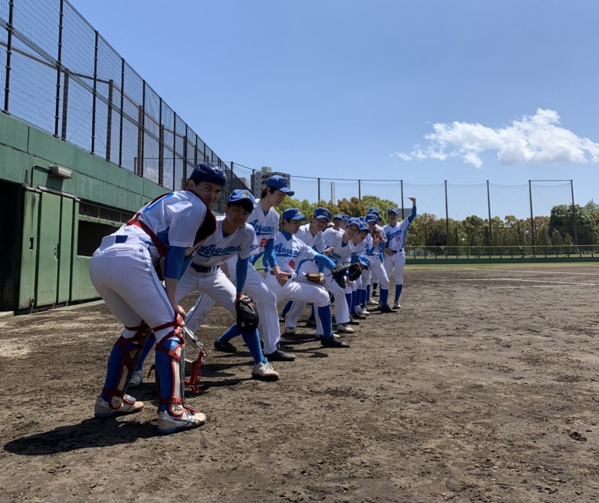
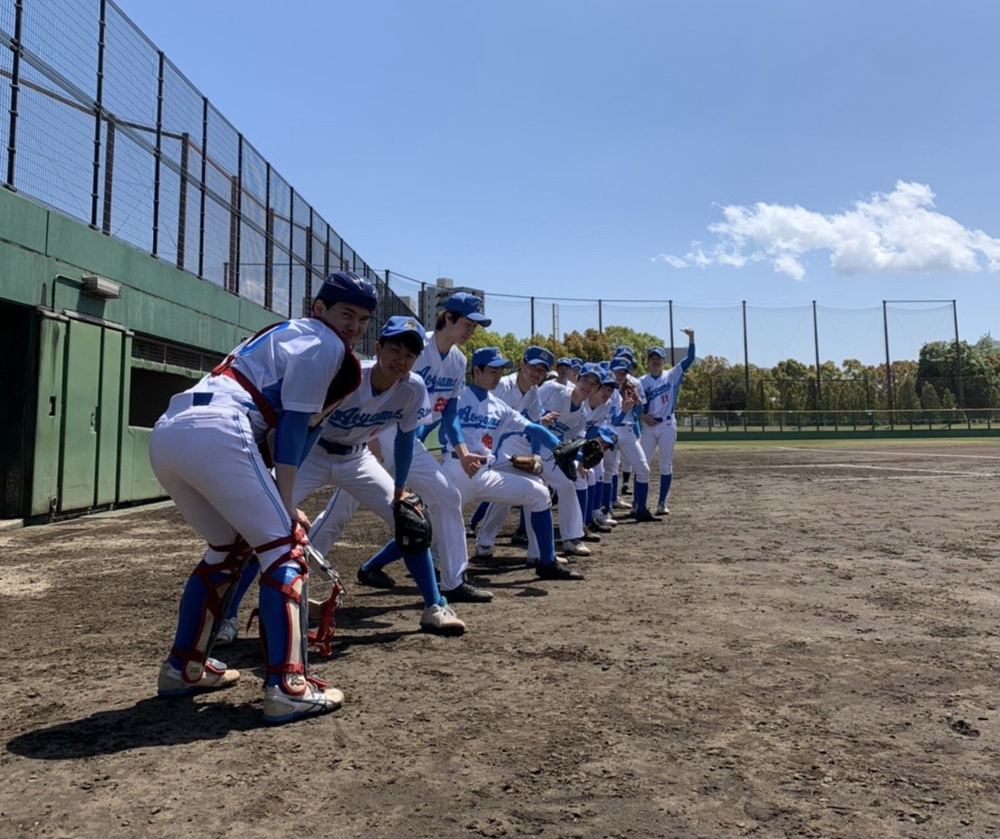
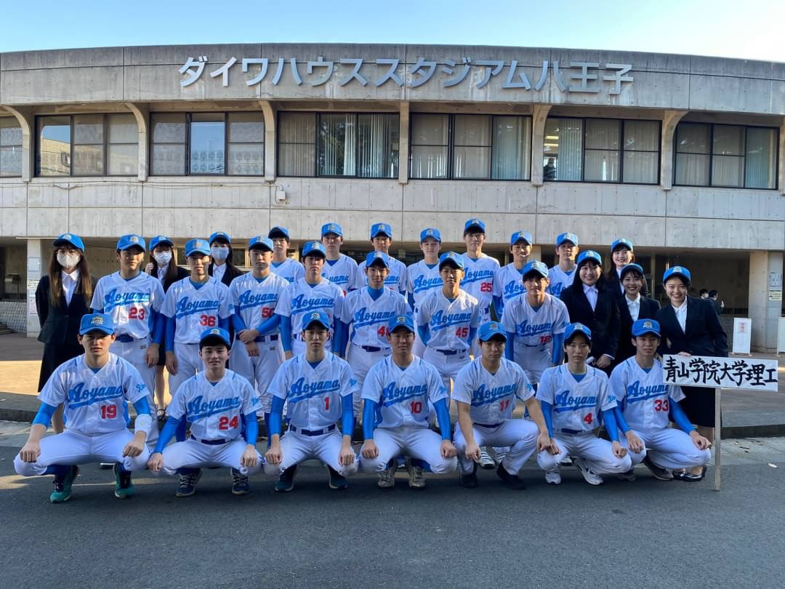
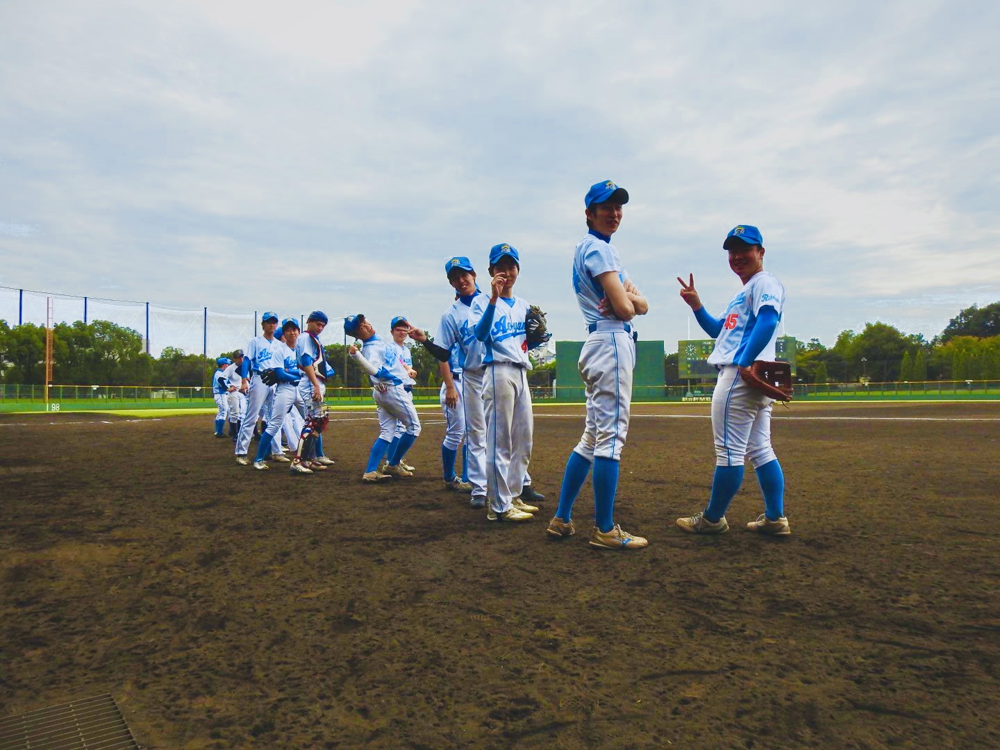
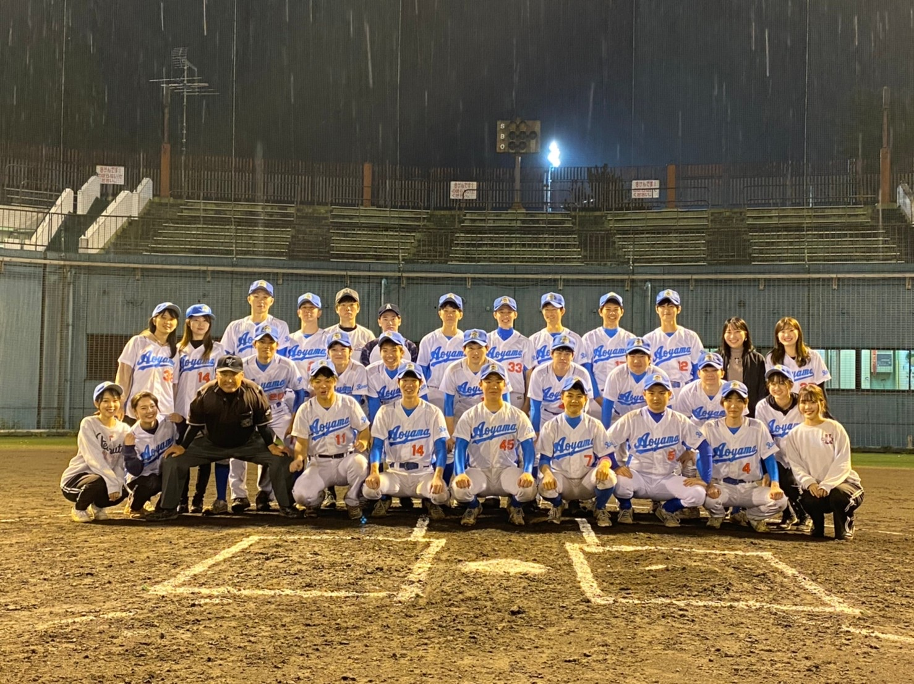
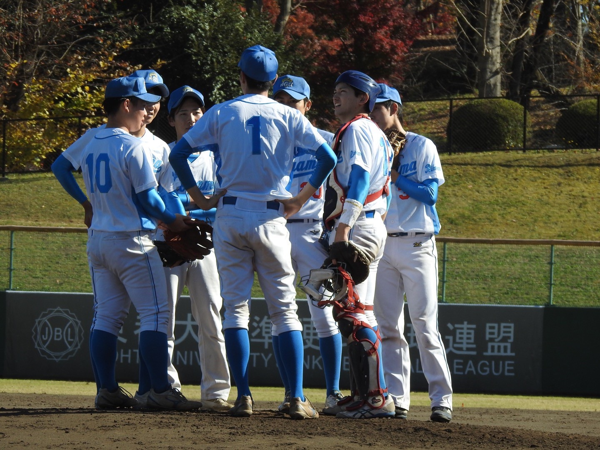
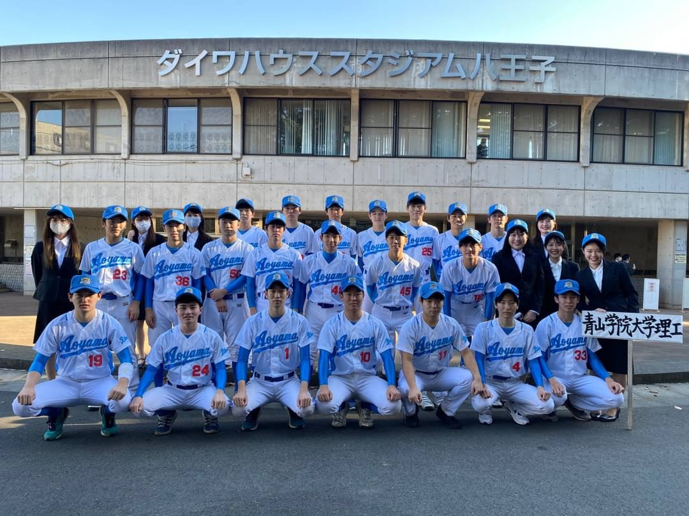
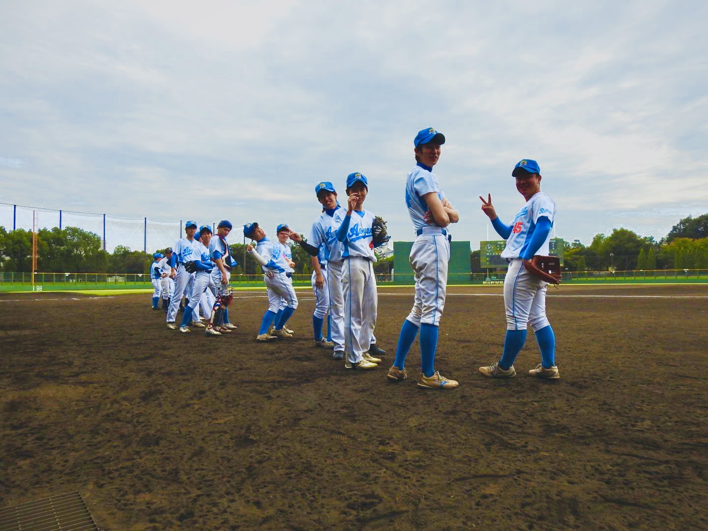
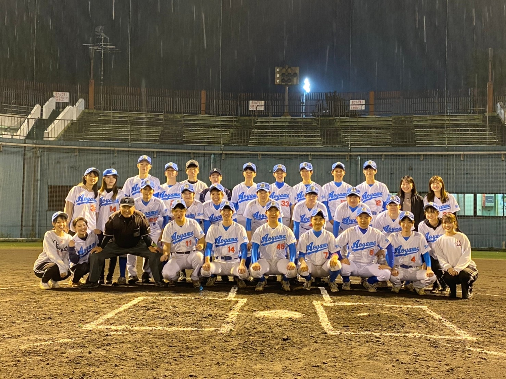
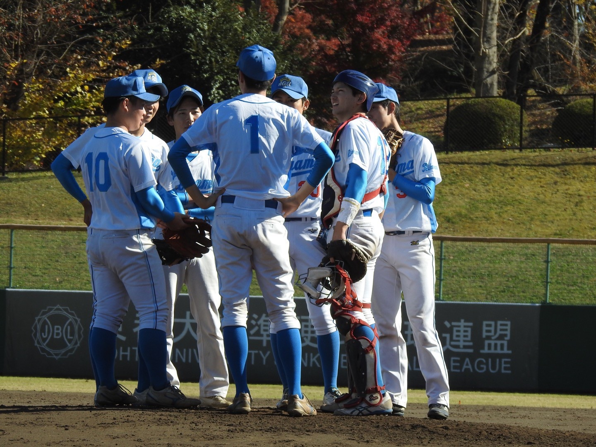

 







INTRO MOVIE
GOAL
WHAT IS NEW
INTRODUCTION
理工軟式野球部、通称りこなんは練習は明るく楽しく取り組み、春・秋に開催されるリーグ戦では上部大会 出場を目指しチーム一丸全力で戦います。マネージャーも練習では選手のサポート、試合では声援を送ってくれる チームに欠かせない存在です。理工と部活名にありますが、理工学部だけでなく文系学部の学生も在籍しております。 選手層も幅広く、高校野球経験者から野球初心者の選手まで在籍しております。学友会体育連合会所属のため、 サークルよりも真剣に部活よりもハッピーオーラ全開で活動しており、野球を楽しみたい人にピッタリです。 是非私たちと一緒に野球をしましょう。
FROM THE 50th GENERATION
2021年11月22日、東日本学生軟式野球選抜大会準決勝敗退により、りこなん50期生は引退となりました。
私たちの代は昨年の同大会初戦のサヨナラ負けから始まりました。1年生の頃からスタメンとして出させて
頂いていたこともあり、この悔しさは今でも鮮明に残っています。
新チームとして新たなスタートを切った私たちは『記録としてもチームとしても歴代最高の代とすること』
を目標にしました。その矢先に、コロナウイルスの感染拡大により緊急事態宣言が発令され、活動の自粛を
余儀なくされました。なかなか活動ができない中、急遽開催された春のリーグ戦。2位以上で以前からみんなで
行きたいと話していた全日本への出場の権利が得られる大会でした。結果は4チーム中3位（1チーム途中棄権
となったため実質最下位）。どこかで自分たちの実力を過信していた私たちのチーム力の無さが浮き彫りに
なった大会でした。
この大会をきっかけに私たちの意識はかなり変わったと思います。個々の能力だけでは野球は勝てないという
ことを自覚し、チーム全員で戦う意識がより一層高まりました。
嬉しいことに繰り上げによって全日本への出場権を掴み挑んだ全日本1回戦。今までで一番熱い戦いでした。
結果はタイブレークで9-8で勝利！！過信ではなく、自信を掴んだ試合だったと思います。
そしてついに迎えた最後の秋のリーグ戦。その最終戦は優勝か引退かがかかった成蹊戦です。3年間で一度も
成蹊大に勝利することができず、常に準優勝でした。負けたら引退という重圧、一度も勝ったことがない相手と
いった今までに感じることのなかったプレッシャーが私たちの背中にのしかかりました。
ですが、その時の私たちは春の私たちとは違いました。チーム全員でもぎ取った1点。それが積み重なり
最終的には8-2で勝利！優勝が決まった瞬間にマウンドへ集まったときは1年間やってきたことが報われた気が
しました。
最後の東日本大会は全日本で負けを屈した愛知大学豊橋学舎に準決勝で当たり、結果は昨年と同様、
サヨナラ負けを屈しました。最後のミーティング、ほとんどの3年生の目に涙が。全員が本気で優勝を目指した
証です。大学の軟式野球部でこんなにも本気になれるとは思っていませんでした。本気になれた一番の要因は
個性豊かなこの50期生12人と巡り合えたことです。そんなみんなとかわいい後輩たちと作り上げたこのチーム。
間違いなく「歴代最高のチーム」です。このみんなと最後の学生野球を堪能することができてほんとに良かった。
改めて言います。『ありがとう』
理工軟式野球部第50代監督 入澤優太

ANNUAL SCHEDULE
| 月 | 内容 |
|---|---|
| 4月 | 春季リーグ開幕 |
| 5月 | 春季リーグ |
| 6月 | 新歓合宿 |
| 7月 | 練習 |
| 8月 | 全国大会 |
| 9月 | 秋季リーグ開幕 |
| 10月 | 秋季リーグ |
| 11月 | 東日本大会 |
| 12月 | 追いコン |
| 1月 | オフ |
| 2月 | 練習 |
| 3月 | 春合宿 |
※コロナ禍により予定が変わる場合がございます。